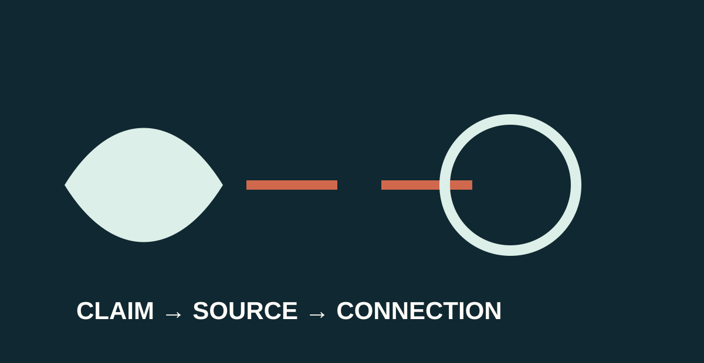

Face the speaker.Listen without side conversations.Record what you actually hear.Ask a respectful question only at the agreed time.
Active listening protects each speaker’s chance to communicate an individual argument.
Today, the second presentation group speaks. The audience has a real job: listen for an identified authoritative source and the claim it helps support.

SPOKEN PRESENTATIONS · SESSION 2Active listening protects each speaker’s chance to communicate an individual argument.
The speaker says that…
The speaker identifies…
This detail supports the claim because…
Write only the source and connection the speaker actually names. Do not fill gaps with a guessed statistic, quotation or organisation.
Present your individual opinion using your prepared guide, accurate supporting details and deliberate voice choices.
Record one claim–source–connection from each selected presentation.
The written text guides the spoken structure. The assessed presentation remains individual.
Respectful stems
“Could you explain how that source connects to your opinion?”
“What would you say to someone who sees it differently?”
“Which detail do you most want your audience to remember?”
Ask only when the teacher invites questions. A speaker may say, “I would like time to think about that.”